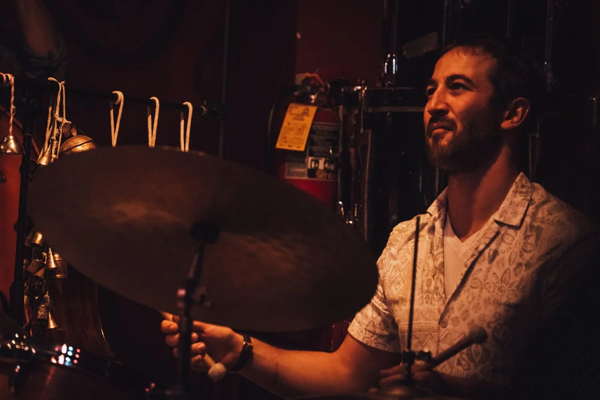
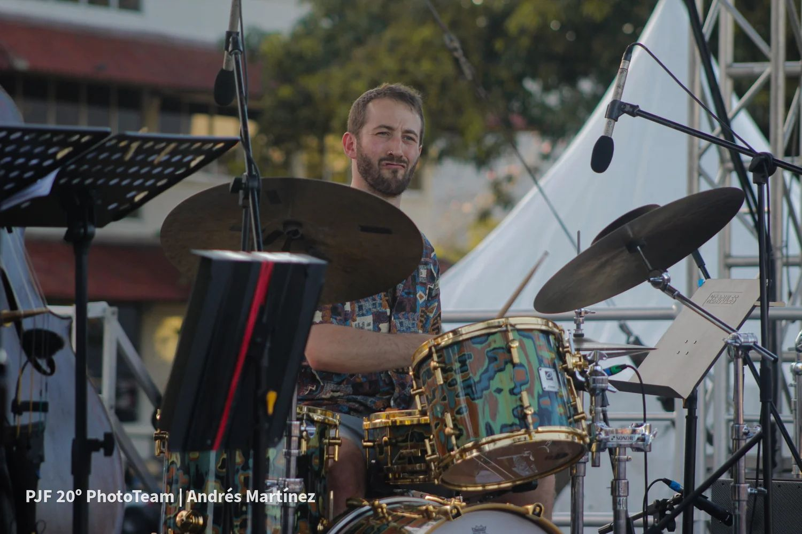

On stage
Live
Upcoming concerts first, then a record of recent shows. New dates reach the WhatsApp group before anywhere else.

Coming up
Upcoming
The last year
Recent concerts
For venues, festivals and artists
Bring Nadav to your stage
Percussion for your band or recording, an original production like Mirror or Alma de Bata, or Bombaras for a night of dancing.
